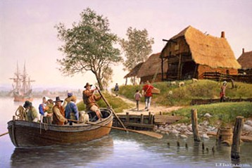
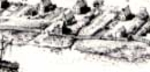
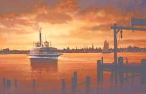

From the beginning of settlement on the site of Albany, people and cargoes were transported across the Hudson to and from Albany on small watercraft generally known as "ferries." This feature begins to organize our exposition on the subject. Please be patient as it is very much In-progress
 This image depicts the beginnings of cross-river ferry traffic between the first settlements at and around the site of Albany.
Fortunately, the historical artist continues to dream creatively about watercraft around what became Albany. Thus, he has produced a number of imaginative and useful illustrations that we will employ to illuminate this topic.
By the time of Albany's chartering, the ferry seems to have run from the foot of Maiden Lane to an unspecified location in Greenbush.  At some time after that, the city corporation began to lease/license the right to run the ferry. In 1751, Bernardus Bradt and Johannes Ten Broeck purchased the ferry license. By the 1770s, a south Ferry ran from below and to the north of Philip Schuyler's new home (roughly the site of the riverbank and South Ferry Street) to perhaps Crailo directly across the Hudson.
In March 1768, the Albany Common Council renewed the Ordinance for regulating the ferry with the following additions: "And be it further ordained by the authority aforesaid that the Person or Persons who buy the Ferry is strictly enjoyed to follow the ordinance made for the regulation of the same, and upon Complaint made to the Mayor, Recorder, Aldermen and Commonalty of the non performance of the ferryman of the Rules by this ordinance laid down, that it shall and may be Lawfull to remove the said Ferryman, he paying for the time he has had the Ferry, and in such case or default to dispose of the same to another person." At that time, the Greenbush ferry was under contract to John Bromley and John Courtney.
In 1770, Widow Hansen and Thomas Lottridge were granted the license to operate the ferry. Beginning in 1781, recently retired army officer Dirck Hansen (son of the aged widow) held the ferry license. Probably, Lottridge lived in the ferry house on the Albany side while Hansen resided in Greenbush.
In 1773, the then newly published Laws and Ordinances defined and more closely proscribed and regulated ferry use. Subsequent maps called it the "Green Bush Ferry" and were showing the ferry house.
Beginning in 1785, the city council contracted with Baltus Van Benthuysen to build a new ferry house. Specifications to Van Benthuysen were: a 50x40x10 ft. first floor and a second floor 7 feet high. Eight rooms per floor and four chimneys.
In September 1789, the city council agreed to a proposal authorizing acquisition of the land needed to open Ferry Street from the Gerry House to Washington (South Pearl) Street.
By 1815, the city directory identified two ferrymen - both of whom were Free Persons of Color. Henry Otefield lived near the south ferry at 76 Church Street. Douw Rocket lived on Lumber Street (north side). Musician John Top lived at the Ferry and ferryman John Hugener lived at 5 Ferry Street - although he was not identified as Afro-Albanian.
 During the nineteenth century, a north ferry ran from the foot of North Ferry Street (near the Van Rensselaer Manor House) across the Hudson to Bath (Rensselaer).
Because so many different watercraft crossed the river during the nineteenth century, we are unsure when or if the city no longer held to its right to license the ferry. However, the ferries continued as the only ways to cross the Hudson until bridges spanned the river at Albany beginning during the 1860s. Maps from that period show three formal ferries connecting Albany to the east side of the Hudson.
Online resources: "River People in Early Albany"; "Albany Ferries," from the Bicentennial History of Albany;
posted 9/10/06; last updated revised 1/25/16